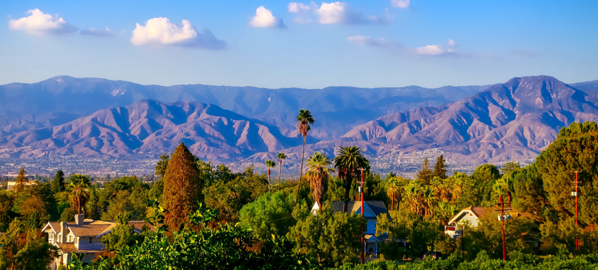

About Me
Born in Los Angeles, my parents got me and my twin sister at a bargain– a buy one, get one deal! We are best friends to this day, but also opposites in every way: me the idealist and her the pragmatist. It was our difference that helped us understand the values of balance; the importance of learning from people who carry different perspectives than yourself.
My parents came from a family of Buddhists. While religion was not a huge part of our lives, they still raised us in an environment imbued with compassion and kindness. This is reflected in all our chosen professions: my older sister works as a child therapist, my twin sister is a teacher, and me an (aspiring) librarian.
As a kid, I grew up biking circles around my grandma’s backyard in Rosemead. I watched movies like The Goonies, and was always jealous of these kids having bike adventures in the woods, with no parental supervision. I dreamed of a childhood like that, but it was impossible in car-centric sprawl of LA suburbia. I have relocated a lot since, and every move has been inspired by this love of bikable infrastructure and proximity to nature.
Places I've Lived
Redlands, CA
I attended the University of Redlands for my undergrad, where I received a Bachelors of Science in Chemistry. I am grateful to had the opportunity to do a research project on the topics of environmental chemistry and microbiology. This involved spending a semester in the east Sierra Nevadas, collecting glacial samples and studying watersheds.
The city of Redlands itself is a desert-y suburb right at the very edge of the LA basin. It has a charming downtown that introduced me to the notion of supporting local businesses. Being seated at the foot of the San Bernardino mountains means there was ample hiking and camping close by!
Eugene, Oregon
After college, I visited my best friend in Eugene and immediately fell in love with the city. Moving there was a very abrupt, very risky decision. Starting off unemployed, I eventually landed three jobs, all related to my field of interest! I simultaneously worked at a community college resource center, a public library, and a tutoring center. I attribute the hard work I did here to kick-starting my career in higher education and libraries. Eugene is notable for the Willamette, a river spanning length of a 13-lane highway, that splits the town in half, and phenomenal bike infrastructure that connects pedestrian life. While developing quickly, the city has remained committed to protecting its strong urban boundaries. Because of this, it is nestled between miles of dense state forest, making it a prime location for outdoor activity of all kinds. The state has the highest amount of missing persons for a reason!
Madison, Wisconsin
Currently, I live in Madison, working full-time at the University of Wisconsin – Madison Libraries. My roles are aplenty: evening and weekend building supervisor, circulation support, student coordination, desk scheduling, and (soon) reference support. I’ve also recently started the Masters in Library and Information Studies here at the University. The city of Madison should win a reward for “most interesting place that the rest of the country doesn’t really know about”. The city is home to the state capitol, a major four-year university, and a charming downtown, all stuffed on a narrow strip of land between two lakes. Also notable are the phenomenal parks, and the extensive bike trail converted from former railway. Its because of this that League of American Bicyclists has labeled Madison one the most bikeable cities in the US